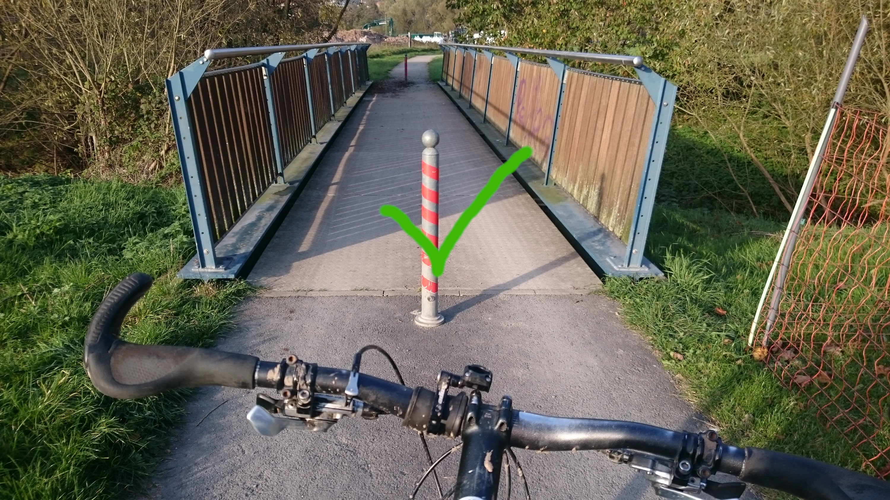
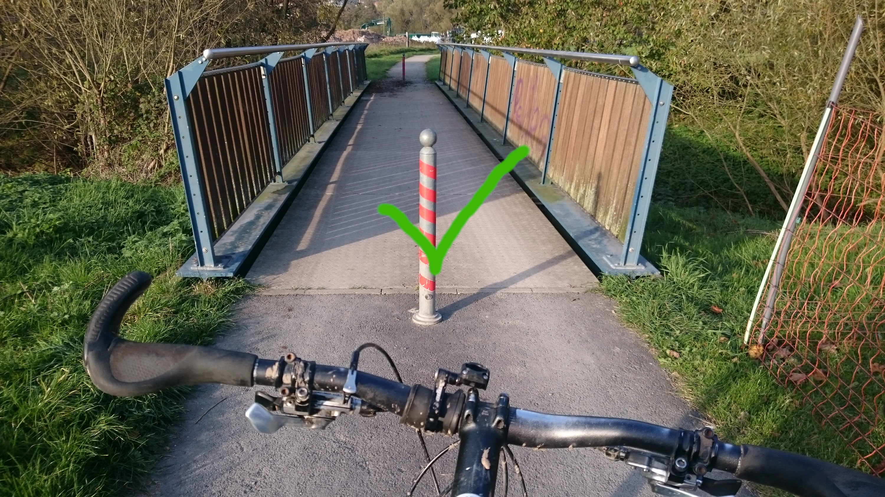

AG Nahmobilität.
grün, smart ...
Mitglieder: Martina Brinkman - Hartmut Diegel - Christiane Emrich - Markus Funk - Anne Grimm - Doris Hempfling - Walter Keil - Tina Martens - Harald Pimper - Sebastian Schmidt - Klaus-Peter Tröbs
Förderung möglich!
Fördertöpfe:
Förderung der Nahmobilität Hessen (AGNH - Land Hessen)Mobilitätsfördergesetz des Landes Hessen
Nationale Klimaschutzinitiative des Bundesumweltministeriums
Sofortmaßnahmen.
Wenn es dunkel ist... I.
Ziel: Sicherheit erhöhen.


- Bordsteinkanten weiß lackieren
- Verbesserung der Beleuchtung (auch am Tag)
- Instandsetzen der bestehenden Beleuchtung
Förderung möglich!
Wenn es dunkel ist... II.
Ziel: Sicherheit erhöhen.
- Erneuerung der bestehenden Beleuchtung.
Hindernisse.
Ziel: Radverkehr sicherer gestalten.
 

- Poller entfernen,versetzen.
- Bordstein absenken.
Kreuzungen I.
Ziel: Erhöhung der Verkehrssicherheit
Auf der Insel

{kind=link}
- Poller am Gehweg
Förderung möglich!
Kreuzungen II.
Ziel: Querung der Kreuzung erleichtern / Verbesserung der Sichtbeziehung

- Wegfall der beiden Parkplätze zu Gunsten eines breiteren Gehweges
- Umwandlung in Fahrradabstellplätze
Kreuzungen III.
Ziel: Optimierung Verkehrsführung Rad
- Radwegebenutzungspflicht aufheben.
- Neue Beschilderung & Markierung (VZ 1022)
Kreuzungen IV.
Ziel: Beleuchtung verbessern zu Steigerung der Verkehrsicherheit

- Übergänge beleuchten (1-2 Beleuchtungsmasten)
Auguste Förster
Freigabe Radverkehr.
Ziel: Freigabe für den Radverkehr Sonnenallee


- Verkehrszeichen (wieder) aufhängen. und / oder:
- Bordabsenkung ab Abzweig und Freigabe für den Radverkehr durch Verkehrszeichen.
Sonnenallee
Hecken.
Ziel: Erhöhung der Verkehrssicherheit


- Bauliche Veränderung, um das Überhangparken zu verhindern.
- Kontrolle von Hecken
Durchlässigkeit<./h3>
Ziel: Sackgassen und Einbahnstrassen auf Durchlässigkeit für Fuss- und Radverkehr
von-Stein-Strasse
Arbeitspakete
Übergang. Haarweg. Parkplatz. Sportplatz. Diverses.Fahrradzonen.
Förderung möglich!
Ziele:
- Stärkung des Radverkehrs
- Angebotsplanung für Radverkehr als Alternative zum Kfz (Klima, Lärm)
- Geschwindigkeitsdämpfende Wirkung innerhalb der Zone (Nebeneinanderfahren)
- Anbindung an das überörtliche Wegenetz
- Bessere Erreichbarkeit von Freizeitangeboten
- & der Nahversorgung (+Radabstellbügel)
Was ist eine Fahrradzone?
Förderung möglich!
- Analog zu Tempo 30-Zonen (rechts vor links!)
- Regeln wie in Fahrradstraßen (z. B. Radfahrende haben Vorrang und dürfen nebeneinander fahren)
- Radverkehr darf weder gefährdet noch behindert werden
- mit wenig Aufwand viel für den Radverkehr schaffen
- Beschilderung und Markierung genügen
- Anliegerverkehr frei!
Vision.
Förderung möglich!
Rad-und Fußgängerbrücke im Naturschutzgebiet über die Fulda
- Anschluss StraBa Linie 6 und das Klinikum
- Anschluss an Wolfsanger
- Anschluss an Radfernweh (R1)
mehr Infos.